당신의 아이디어를 즉시 !
3D로 만들어 보세요.
건축과 인테리어부터 가구, 설비, 전시까지.
3D로 생각해야 하는 모든 일에서 SketchUp Pro가 사용되고 있습니다.
선을 긋고
스케치 하듯이
면을 만들고
닫힌 선이 곧 면으로
밀고 당기면
Push/Pull 하나로
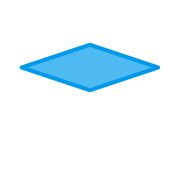
입체가 된다
배우는 데 하루면 충분
이런 고민이 있다면, 지금 구매하세요!
컨셉을 잡는 데
시간이 너무 걸려요
건축 설계자
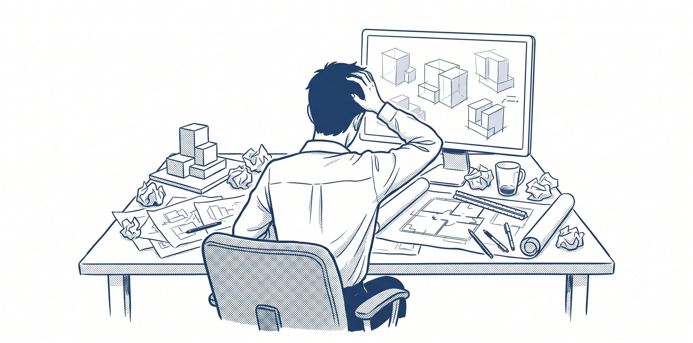
스케치업으로
매스 검토를 빠르게
2D 도면만으론 고객님이
이해를 못 하세요
인테리어 디자이너
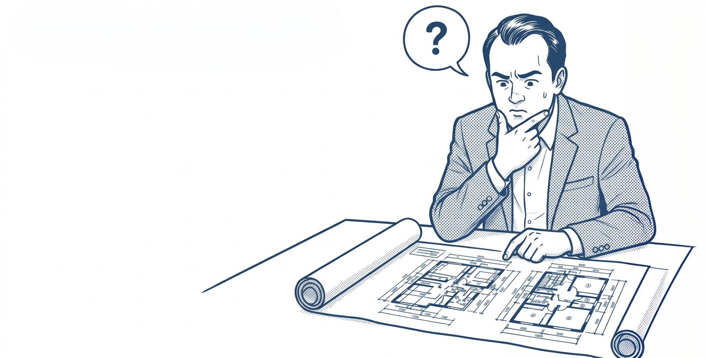
3D 모델링을 활용한
직관적인 커뮤니케이션
도면과 현장이
자꾸 어긋나요
시공 · 현장 담당자
시공 전 간섭체크도
3D로 미리 확인
왜 SketchUp Pro인가?
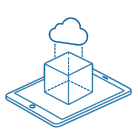
언제 어디서나 가능한
3D 모델링
데스크톱, 웹, 아이패드를 사용해 공간의 제약 없이 언제 어디서나 3D 모델링이 가능합니다.
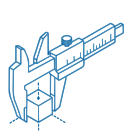
1000분의 1까지
정확하게
아이디어 구상부터 치수 기반의 정밀 작업까지 오차 없이 정교하게 구현합니다.
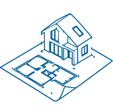
2D 도면까지 한 번에
LayOut을 활용해 3D 모델을 2D 도면 및 발표 자료로 즉시 변환합니다.
세계 최대 무료 라이브러리
3D Warehouse에서 수만 가지 에셋들을 무료로 다운로드하여 작업물의 퀄리티를 올려보세요.
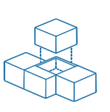
필요한 기능만 확장
Extension Warehouse에서 필요한 확장 프로그램을 찾아 간편하게 설치할 수 있습니다.
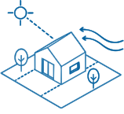
설계 전 환경 분석
PreDesign을 통해 주변 기후 조건을 사전에 분석하여 효율적인 설계를 시작할 수 있습니다.
2027의 새로운 기능
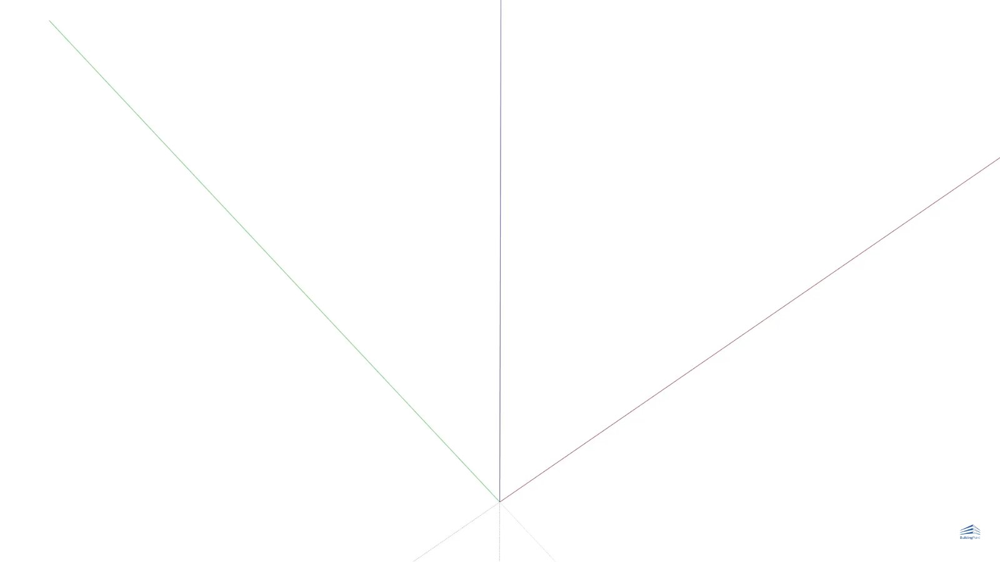
Procedure Tools 3종 출시
작업 과정을 기억하는 새 모델링 방식으로, 다시 만들 필요 없이 수정만으로 결과를 변경할 수 있습니다.
- Follow Me
- Solid Tools
- Copy Along
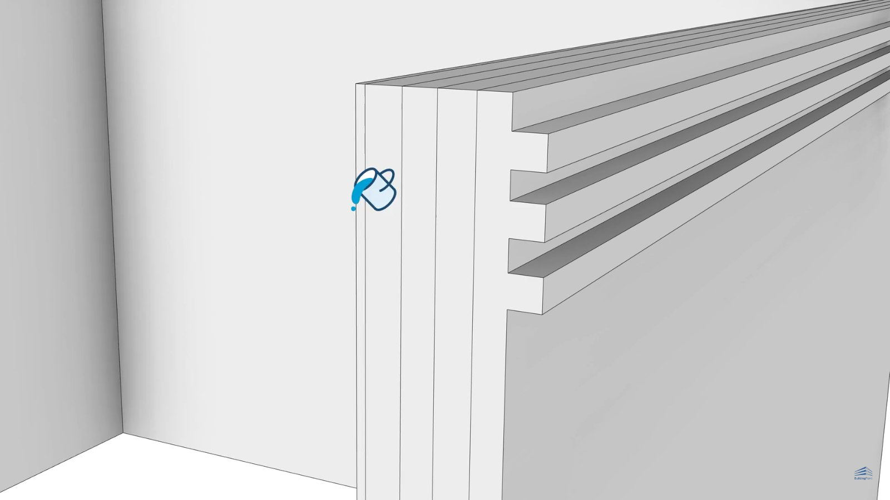
단면 해치
객체의 단면에 사용자가 원하는 해치 패턴을 적용하고 표시할 수 있습니다.
- SketchUp & LayOut 지원
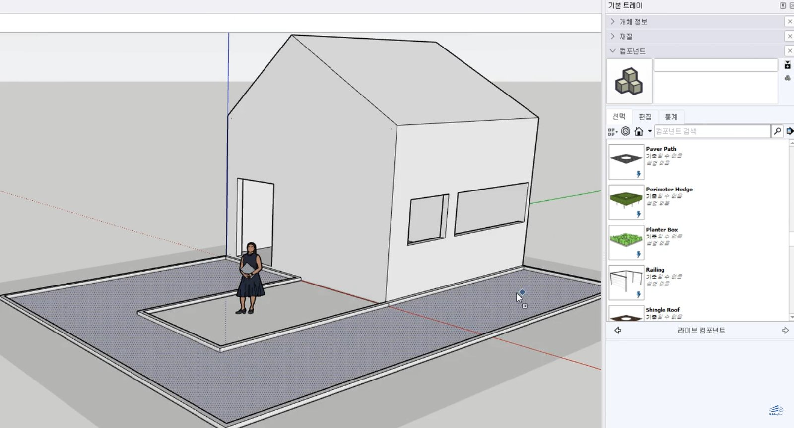
Auto Fit 라이브 컴포넌트
면 위에 끌어다 놓으면, 배치와 동시에 크기와 형태가 면에 맞게 자동으로 설정됩니다.
- Live Components
이렇게 개선되었어요
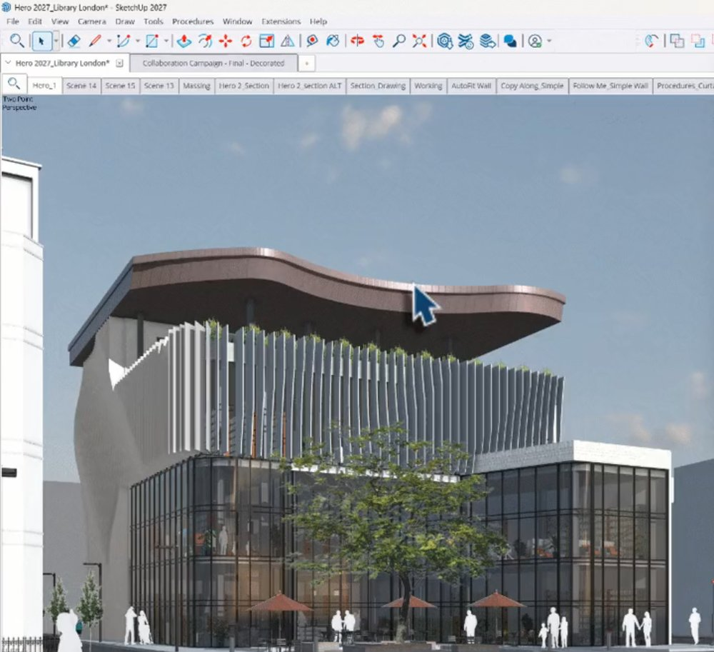
탭으로 모델 관리
파일마다 SketchUp 창을 따로 띄울 필요 없이 탭으로 전환하고, 분리한 창에서 여러 모델을 한눈에 확인합니다.
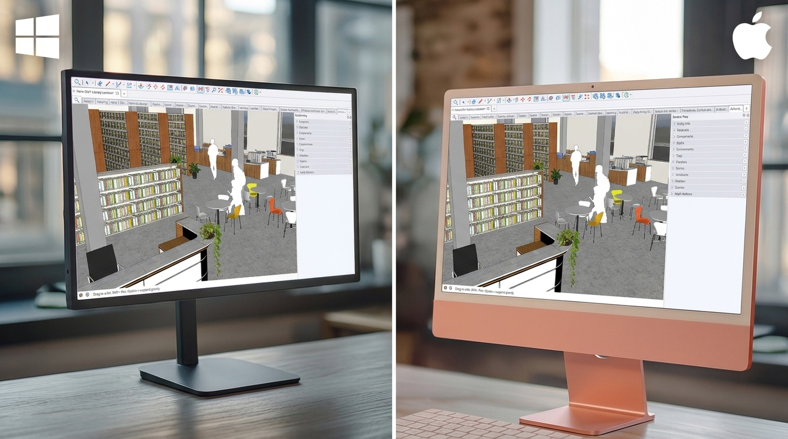
Mac 인터페이스
Mac의 화면 구성이 Windows와 통일되어, 툴바와 트레이를 원하는 위치에 고정할 수 있습니다.
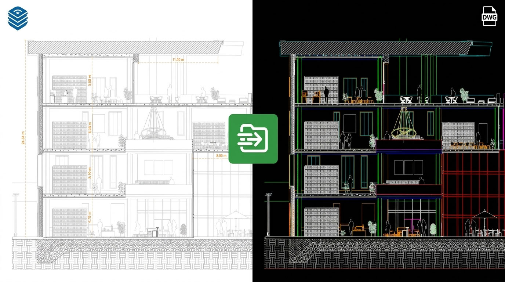
은선 성능 개선
가려진 선을 계산하는 엔진을 개선해 선 변환 작업이 빨라집니다.
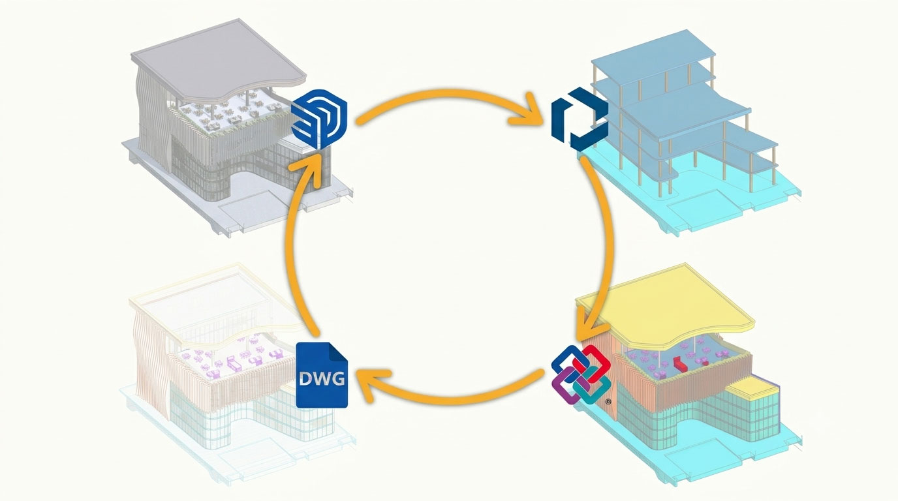
가져오기 및 내보내기
CAD, IFC, USD 포맷 지원 강화로 데이터 호환성이 한층 높아집니다.
스케치업 프로 포함 제품

Desktop용 스케치업
확장 가능한 3D 모델러

Web용 스케치업
설치 없이 웹에서 모델링

iPad용 스케치업
3D 모델링 전용 도구

LayOut
도면 · 프레젠테이션 문서

SketchUp Viewer
ios 전용 모바일 뷰어

3D Warehouse
무료 3D 모델 라이브러리

Extension Warehouse
분야별 기능 확장

Trimble Connect
클라우드 저장 · 협업

PreDesign
설계 전 대지 · 기후 분석
플랜별 제품 비교
| 기능 | Free무료 · 웹 전용 | Pro기본 구성 | Pro Scan스캐닝 전문가용 | Pro Civil Contractor건설/토목 전문가용 |
Pro AdvancedAEC 전문가용 | Studio올인원 패키지 |
|---|---|---|---|---|---|---|
웹용 스케치업SketchUp for Web | ||||||
데스크톱용 스케치업SketchUp for Desktop | ||||||
아이패드용 스케치업SketchUp for iPad | ||||||
3D 모델 저장 창고3D Warehouse | ||||||
스케치업 기능 확장Extension Warehouse | ||||||
클라우드 스토리지Trimble Connect | 10GB | 무제한 | 무제한 | 무제한 | 무제한 | 무제한 |
현장 좌표 관리Field Points for SketchUp Win Only | ||||||
굴착 설계 연동Site Contractor Win Only | ||||||
포인트 클라우드 모델링Scan Essentials Win Only | ||||||
Revit 파일 지원(*.rvt)Revit Importer Win Only | ||||||
Revit에서 *.skp 파일 가져오기SketchUp Importer for Revit Win Only | ||||||
고품질 렌더링V-Ray Win Only |
Field Points , Site Contractor , Scan Essentials , Revit Importer , SketchUp Importer for Revit , V-Ray 기능은 Windows OS 환경에서만 사용할 수 있습니다.
지원 파일 포맷
가져오기 (Import)
*.3ds, *.dwg, *.dxf, *.dae, *.dem, *.ddf, *.kmz, *.ifc, *.ifcZIP, *.jpg, *.jpeg, *.pdf, *.psd, *.png, *.stl, *.skp, *.skm, *.ske, *.skh, *.style, *.tif, *.tiff, *.tga, *.trb, *.usd, *.usda, *.usdc, *.usdz, *.bmp, *.glb
내보내기 (Export)
2D*.pdf, *.eps, *.bmp, *.jpg, *.tif, *.png, *.dwg, *.dxf
3D*.3ds, *.dwg, *.dxf, *.dae, *.fbx, *.kmz, *.ifc, *.trb, *.obj, *.stl, *.usd, *.usda, *.usdc, *.usdz, *.wrl, *.xsi, *.glb
시스템 요구 사항
운영체제
Windows 11 · macOS 15(Sequoia) 이상
CPU
2GHz 이상 (Win OS) · 2.1GHz 이상 (Mac OS)
RAM
8GB 이상 (Win · Mac 동일)
디스크 공간
6GB 이상 (Win · Mac 동일)
그래픽
VRAM 8GB 이상 최신 GPU (OpenGL 3.1 이상)
(PBR 등 고성능 작업 시 32GB 이상 권장)
필수 소프트웨어
Win OS: .NET Framework 4.6.2 이상
Mac OS: QuickTime 5.0 이상
지원 언어
한국어 지원 (다국어 포함)
32비트 Windows에는 설치할 수 없습니다.
Boot Camp, VMWare, Parallels 등 가상화 환경을 지원하지 않습니다.
공통 안내사항
- 라이선스 발급 순서결제 완료 후 트림블 본사의 승인을 거쳐 라이선스가 발급됩니다. 승인이 완료되면 결제 시 입력하신 이메일로 안내 메일이 발송됩니다. 메일 수신 후 빌딩포인트코리아에서 발송한 활성화 가이드에 따라, 라이선스 활성화 및 계정 할당을 진행해 주세요.
- 라이선스 유지보수모든 스케치업 라이선스는 발급일로부터 1년 간의 기술지원 서비스 비용이 포함되어 있습니다. 빌딩포인트코리아 기술지원팀 support@buildingpoint.co.kr
주문 및 라이선스 정책
- 환불 조건라이선스 발급일 기준 7일 이내 라이선스를 활성화하지 않은 경우 환불이 가능합니다.
- 반품 / 환불 예외 사항소프트웨어 상의 문제를 제외한 기타 다른 이유로 인한 반품/환불 불가
- 결제 관련카드결제 취소의 경우 카드사 또는 PG사 사정에 따라 취소 완료까지 최대 15일까지 소요될 수 있습니다. 가상계좌 입금 후 취소의 경우 당사와 PG사 환불 규정에 의해 15일 이내 환불됩니다. 취소 시 발생하는 모든 수수료(카드취소, 입금 후 취소)는 고객 부답입니다.
라이선스 발급 안내
본 상품은 라이선스가 발급되는 상품으로, 라이선스 발급에 영업일 기준 평균 1~2일 소요됩니다.